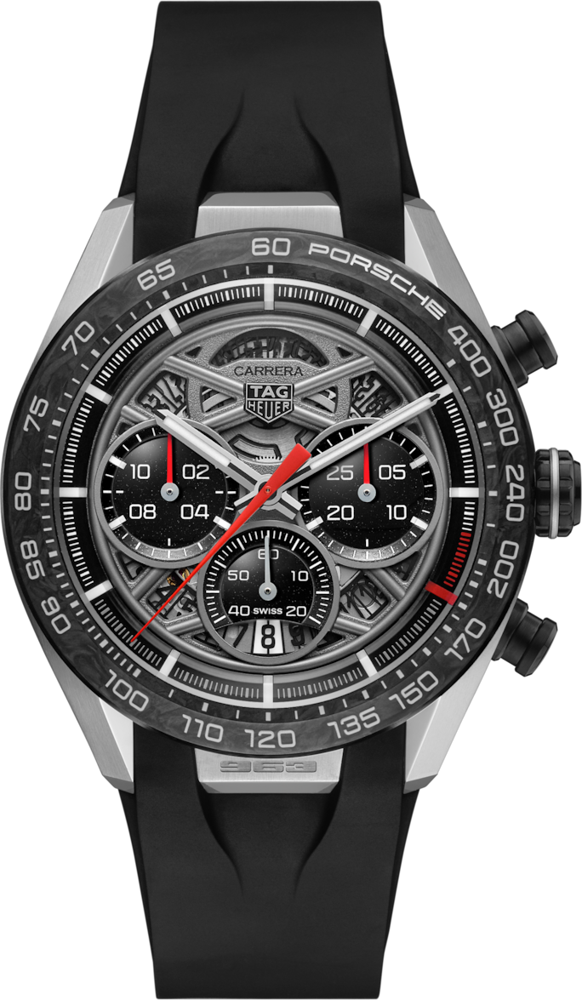

Наші бренди
Ми з гордістю представляємо такі всесвітньо відомі бренди, як Rolex, Omega, Tag Heuer та багато інших.
Кожен бренд — це історія традицій та бездоганної майстерності.
Наша колекція містить як класичні, так і сучасні моделі, що відповідають вашим вимогам та стилю.
Обирайте найкраще разом із TimePulse!
Чоловічі годинники
| Колекція чоловічих годинників | |||
|---|---|---|---|
| Годинник 1 | Годинник 2 | Годинник 3 | Годинник 4 |
 |
 |
 |  |
| Tag Heuer Aquaracer | Tag Heuer Formula 1 | Tag Heuer Carrera | Tag Heuer Carrera (42мм) |
|
|
|
|
Жіночі годинники
| Колекція жіночих годинників | |||
|---|---|---|---|
| Годинник 1 | Годинник 2 | Годинник 3 | Годинник 4 |
 |
 |
 |
 |
| Tag Heuer Carrera (29мм) | Tag Heuer Link (32мм) | ||
| Характеристики | |||
| Сапфірове скло | Нержавіюча сталь | Автоматичний механізм | Точність хронометра |
| Шкіряний ремінець | Водонепроникність | ||